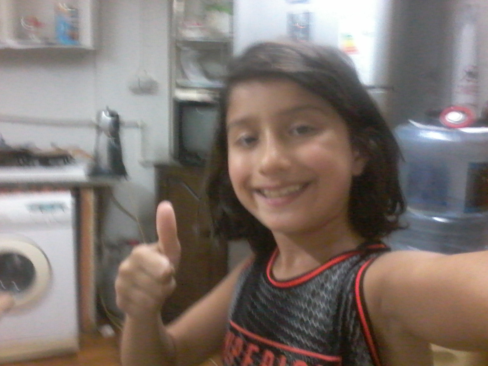
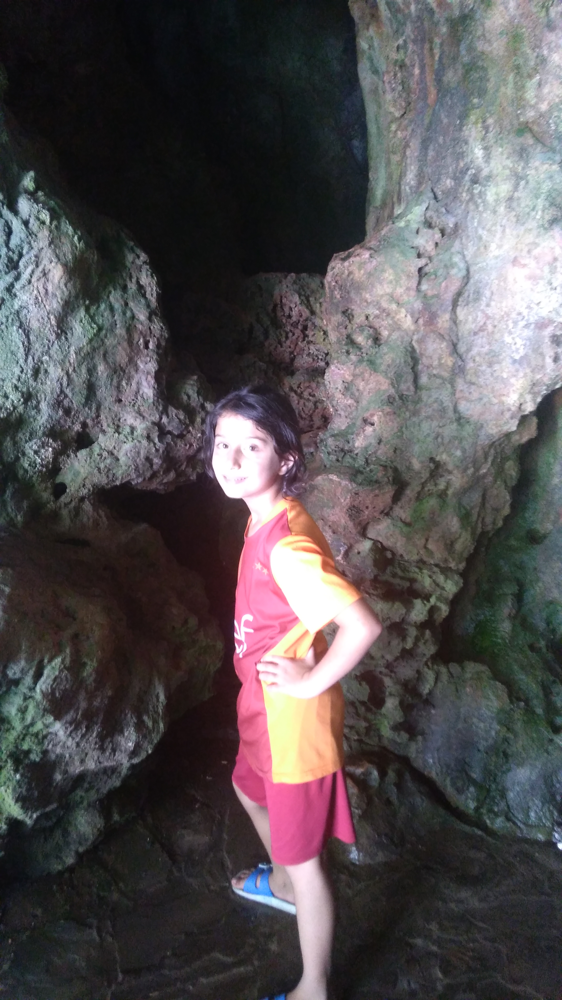

|  |
 |
 |
 |
evet burada benim antalyadaki gezimin fotorafýný görüyorsunuz birde normal fotorafýmý biraz kendimden bahsedeyim istanbulda oturuyorum ve okuyorum ayrýca birde
abim var ismi mert ama onun resmini koyamýycam aþþaðýda babamýn resmini görüyorsunuz